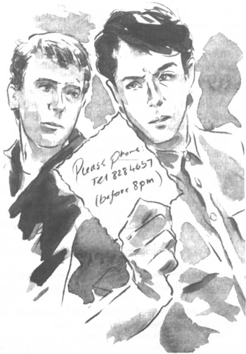

Listen to Part 1:
Tom không thích Giáng sinh.
Danny buồn bã và không gọi điện cho Tom. Khi những người bạn khác gọi điện, Tom cũng không muốn nói chuyện với họ.
Tom không ra ngoài. Cậu không nói chuyện với bất kỳ ai. Cậu ngồi trong phòng và vẽ những bức tranh kỳ lạ. Cậu chỉ sử dụng những màu tối.
Đó là một buổi sáng xám xịt, lạnh lẽo khi Tom thức dậy vào Ngày đầu năm mới.
Cậu tự nhủ rằng: "Mình phải quên Rita mất thôi".
Tom quyết định gọi điện cho Danny.
Tom nhẹ nhàng nói: "Chúc mừng năm mới, Danny".
Danny đáp: "Chúc mừng năm mới, Tom. Thật tuyệt khi nghe giọng cậu".
Hai người bạn cùng nhau đi uống cà phê.
Tom nói: "Mình xin lỗi, Danny. Mình đã rất thô lỗ với cậu".
Listen to Part 2:
Danny đáp: "Quên chuyện đó đi, Tom".
Tom nói: "Mình đã làm những điều ngớ ngẩn như vậy". Rồi cậu kể cho Danny nghe về chiếc đồng hồ và tấm thiệp.
Danny nói: "Tội nghiệp Tom quá. Cậu biết không, Rita vẫn yêu cậu mà".
Tom buồn bã nói: "Không. Mình không nghĩ vậy".
Tom hy vọng Rita vẫn yêu cậu. Nhưng cậu không muốn cô ấy làm mình tổn thương thêm lần nữa. Cậu không biết phải làm gì.
Kỳ nghỉ Giáng sinh kết thúc và Tom trở lại làm việc. Giờ thì ngày ngắn, đêm lạnh và dài. Tom suy nghĩ rất nhiều về tương lai của mình. Cậu quyết định sẽ thi lại. Tháng Chín, cậu muốn vào Học viện Silverton.
Tháng Một trôi qua. Chẳng mấy chốc đã đến tháng Hai. Trên đường đến thư viện, Tom thấy những tấm thiệp Valentine được bày trong cửa sổ của các cửa hàng. Ngày mai là ngày 14 tháng Hai, ngày lễ tình nhân. Tom định gửi thiệp cho Rita. Nhưng cậu không biết địa chỉ mới của cô ấy.
Sáng hôm sau, Tom chạy xuống cầu thang để xem có thư nào không. Có một lá thư từ học viện. Lá thư yêu cầu Tom đến phỏng vấn. Nhưng không có tấm thiệp Valentine nào.
Tom bắt xe buýt đi làm. Có hai cô gái đang mở những tấm thiệp Valentine.
Cả hai đều cười. Tom ngồi vào bàn làm việc tại thư viện. Buổi sáng trôi qua rất chậm. Rồi ông Jackson từ Thư viện Trung tâm Silverton lớn bước vào.
Listen to Part 3:
Ông ấy nói: "Chào buổi sáng, Tom. Tôi có một tấm thiệp gửi cho cậu. Nó đã được gửi nhầm đến thư viện".
Tom thấy chữ viết tay của Rita trên chiếc phong bì màu đỏ. Sau tất cả, cô ấy đã gửi cho cậu một tấm thiệp Valentine! Cậu xé toạc phong bì.
Đột nhiên, khuôn mặt cậu tái nhợt hẳn đi. "Ôi, không!" cậu kêu lên.
Bên trong phong bì là một tấm thiệp mời dự đám cưới. Rita và ông Spooner sẽ kết hôn vào ngày 17 tháng Tư. Phía sau tấm thiệp là một lời nhắn.
Vui lòng gọi điện tới số: 828 4657 (trước 8 giờ tối)
Tom sốc và buồn bã. Đây là tin tức khủng khiếp.
Cậu nghĩ rằng: "Rita thật tàn nhẫn. Cô ấy biết rằng mình yêu cô ấy. Tại sao cô ấy lại gửi thứ này cho mình?".
Tom cho Danny xem tấm thiệp mời.
Danny nói: "Mình không thể tin đây là sự thật. Có lẽ Rita muốn cậu ngăn cản cô ấy kết hôn".
Tom nói: "Mình không thể tin điều đó, Danny".
Listen to Part 4:
Danny đáp: "Vậy thì hãy cố quên Rita đi".
Danny nói tiếp: "Trên đời này còn rất nhiều cô gái khác nữa".
Tom lắc đầu. Cậu nói: "Nhưng không ai giống Rita cả".
